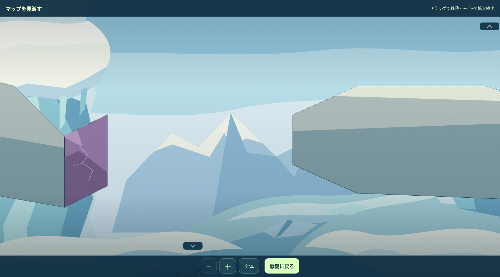
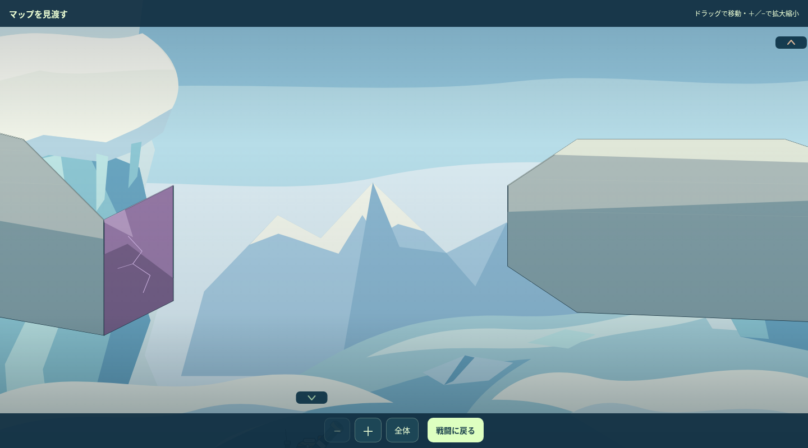
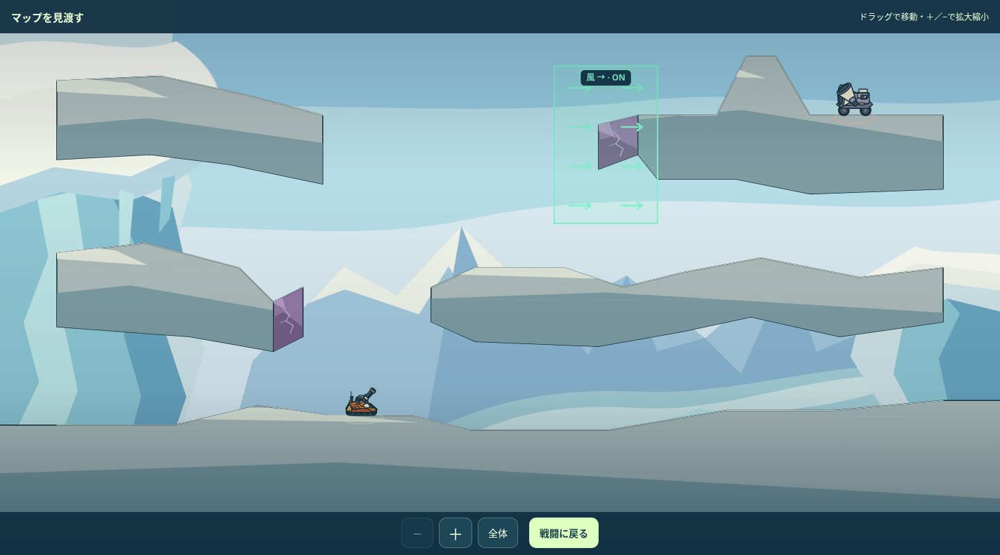
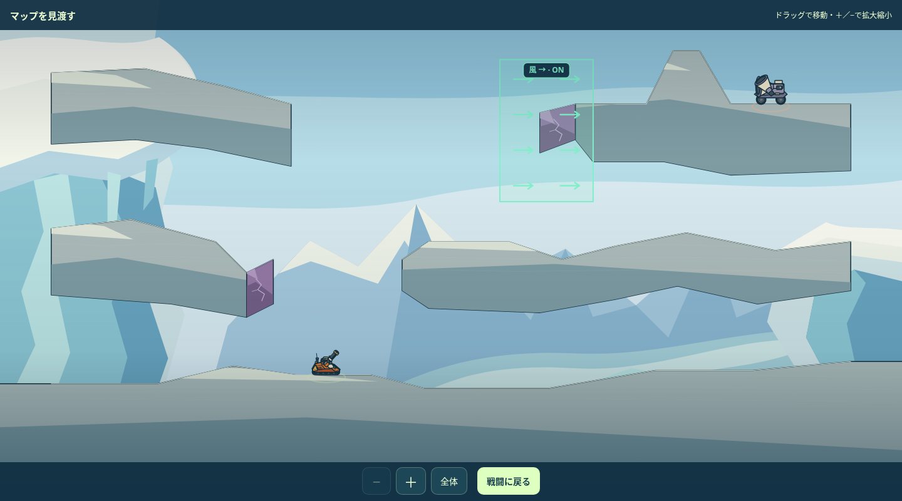

58｜最初の裂け目を広げる
中層西端を30px引き、開口を260→290pxへ。
既存の上層への転移・着地位置・反撃結果と、その後の通常弾を維持。

現行・拡大
調整案・拡大中層西端は30px短くなります。中央の広い受け面、上層、破壊片、風は保持しています。
全景と記録した実入力後を見る

現行・全景
調整案・全景64｜右側で平らに立って撃てる
右側の水平部を30→90pxへ。右の上りは71.6→56.3度。
同じ転移・歩行入力で、斜面で止まっていた状態から水平な射点へ到達。
原形の大きな崖と庇、敵の位置、左高所からの射撃を保ち、右側の床だけを調整しています。
全景と記録した実入力後を見る
記録した実入力後